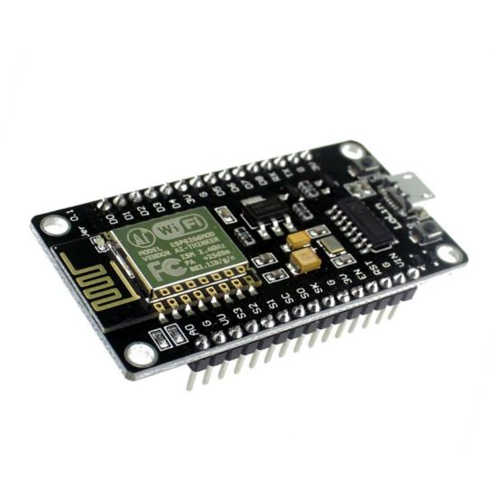

Комплектация анализатора микроклимата
Цифровой датчик Температуры и Влажности DHT22
Диапазон измерений: -40°C - 80°C
Диапазон измерений: 0% - 99,9%
Напряжение питания: 3,3V - 5,5V
Arduino Mega 2560
ОЗУ: 8 Кб
Микроконтроллер: ATmega2560-16AU работает на 16 МГц (5V)
Рабочее напряжение питания платы: 5V
Датчик звука FC-04
Напряжение питания: 3.3V - 5V
Ток потребления: 1,4мА
Макетная плата Breadboard 170
Безпаечные соединения радиодеталей
Датчик дыма и газов MQ-2
Напряжение питания: 5 V
Потребляемый ток: 110-160 мА

Оптический датчик освещённости BH1750 GY-302
Точность в режиме высокого разрешения: 1 Лк
Точность в режиме низкого разрешения: 4 Лк
Блок питания TSP-12
Напряжение питания: 12 V
Цветной сенсорный экран TFT LCD Shield
Разрешение экрана: 240x320 пикселей
Диагональ: 2.4"

WI-FI NodeMCU Lua ESP8266 LoLin
4Мб флэш памяти